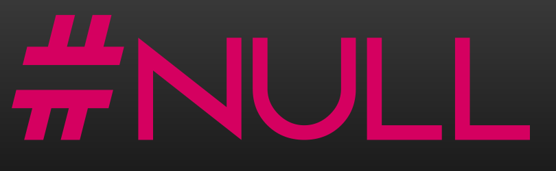
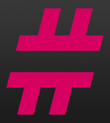

This project was to design a logo for a Dota 2 team I was briefly part of. This included making the logo and icon, as well as textures for in-game assets such as banners.

The #NULL Logo
The logo had to be easy to read, which led to the choice of a bright magenta color against a dark grey background. The stylized pound sign was notably NOT intended to evoke a Twitter hashtag; rather, it was meant to be styled after a null-type variable in a hypothetical programming language.

The icon had to be clean and easy to identify.
some more words go here